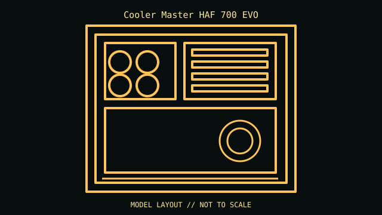

[ IDENTIFIED ENCLOSURE // SSI-EEB/E-ATX FULL-TOWER ]
Cooler Master HAF 700 EVO
556 × 279 × 540 mm (L × W × H; chassis body); SSI-EEB/E-ATX full-tower. Board fit: Mini-ITX, microATX, ATX, E-ATX, SSI-CEB and SSI-EEB; eight expansion slots. GPU: Up to 490 mm. CPU cooler: 166 mm maximum CPU-cooler height. Radiator: Top up to two 360 mm or one 420 mm; front up to 420/360 mm, rear up to 240 mm, bottom up to 420/360 mm and side up to 480/420 mm. Thickness/layout are constrained; consult the manual. PSU: ATX PSU up to 200 mm.

REVISION / CONFIGURATION CAVEAT: HAF 700 EVO is a 24.7 kg large chassis body; stated protrusion-inclusive envelope is larger (666 × 291 × 626 mm L × W × H). Max radiator and storage counts are alternate layouts, not guarantees of simultaneous fit.
Mechanical specifications and fit
| Exact model | Cooler Master HAF 700 EVO — SSI-EEB/E-ATX full-tower. |
|---|---|
| Dimensions and construction | 556 × 279 × 540 mm (L × W × H; chassis body); see cited manufacturer page/manual for measured envelope and revision-specific detail. |
| Motherboard form-factor fit | Mini-ITX, microATX, ATX, E-ATX, SSI-CEB and SSI-EEB; eight expansion slots. |
| GPU clearance | Up to 490 mm. |
| CPU-cooler clearance | 166 mm maximum CPU-cooler height. |
| Radiator clearance | Top up to two 360 mm or one 420 mm; front up to 420/360 mm, rear up to 240 mm, bottom up to 420/360 mm and side up to 480/420 mm. Thickness/layout are constrained; consult the manual. |
| PSU clearance | ATX PSU up to 200 mm. |
| Drive mounts | Up to twelve 3.5/2.5-inch combination positions plus twelve dedicated 2.5-inch positions, subject to cage layout. |
Compatibility and service notes
Use two-person handling and retain the LCD, included PCIe riser, drive cages and specialty fasteners. Plan GPU sag support and route cables before filling the extensive radiator positions.
- Check GPU length and thickness, its power-plug bend, cooler height and radiator/fan assembly against the same installed configuration; advertised maxima may conflict.
- Confirm motherboard standoffs match the board holes and inspect front-panel, USB and fan-controller headers before powering the build.
- Record the exact SKU, manual revision, removed brackets and unused drive hardware. Measure the individual chassis before shipping or fitting nonstandard parts.
Manufacturer and manual sources
- Cooler Master HAF 700 EVO — manufacturer product specificationsManufacturer product/model page; use the SKU and configuration that match the specimen.
- Cooler Master — HAF 700 EVO user manualModel-specific installation/manual reference for mounting diagrams and configuration limits.
Clearance limits describe separate manufacturer fit conditions; they are not a promise that all maximum-size parts fit simultaneously. Confirm the exact revision before purchase or installation.